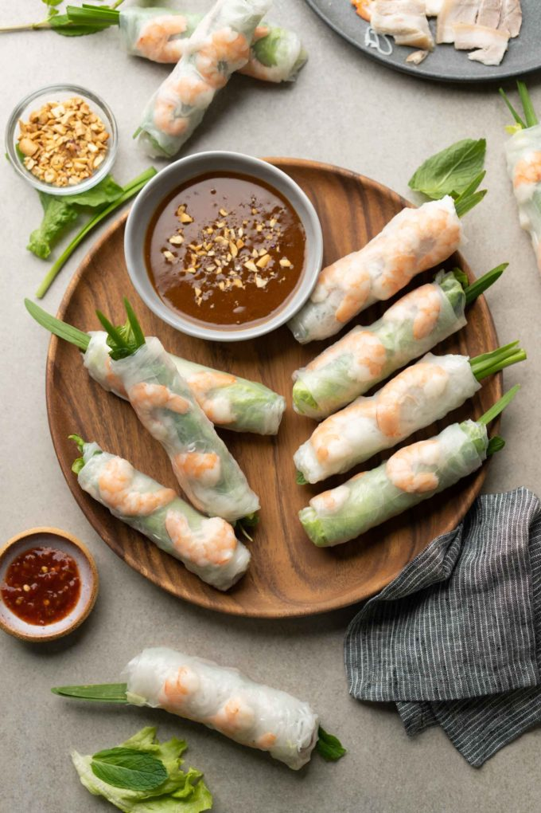

Goi Cuon Recipe

I was so excited when I came across this recipe from
the Hungry Huy blog by Huy.This is my
absolute all time favorite recipe. It is
so easy, and healthy. It always reminds me of home.
The wonderful taste of fresh herbs with cooked shrimp
and soft texture of the rice paper, just cannot be
beat.
Ingredients
Pork
- 1/2 lb pork belly
- 1 medium onion
- 1 tsp sugar
- 1 tsp salt
Shrimp
- 1/2 lb shrimp
- 1/4 tsp salt
Veggies and Other Ingredients
- 1 head green leaf lettuce
- 1/2 bunch mint
- 1/2 bunch chives
- 1/2 pack fried spring roll wrapper
- 1/3 pack dried rice noodles
Peanut Dipping Sauce
- 2 tbsp oil
- 2 tbsp minced garlic
- 8 tbsp hoisin sauce
- 2-3 tbsp peanut butter
- 1 cup water
- chili paste optional